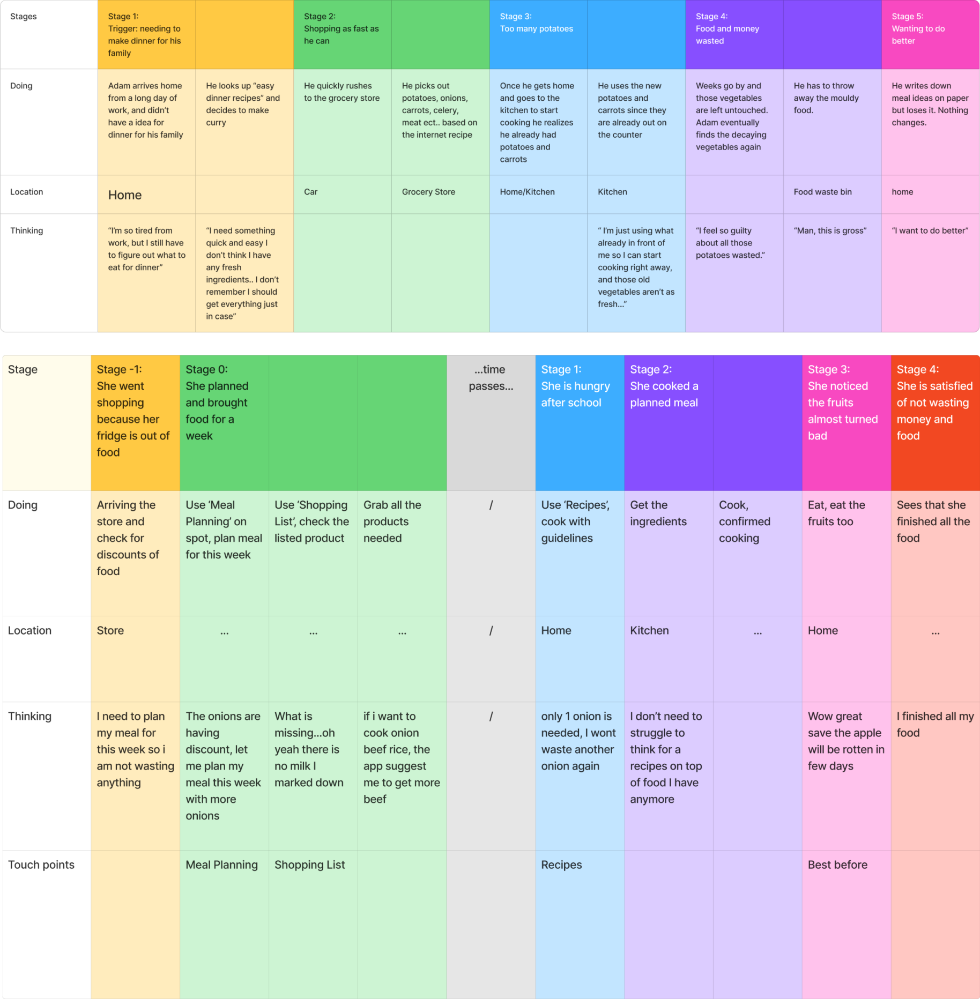
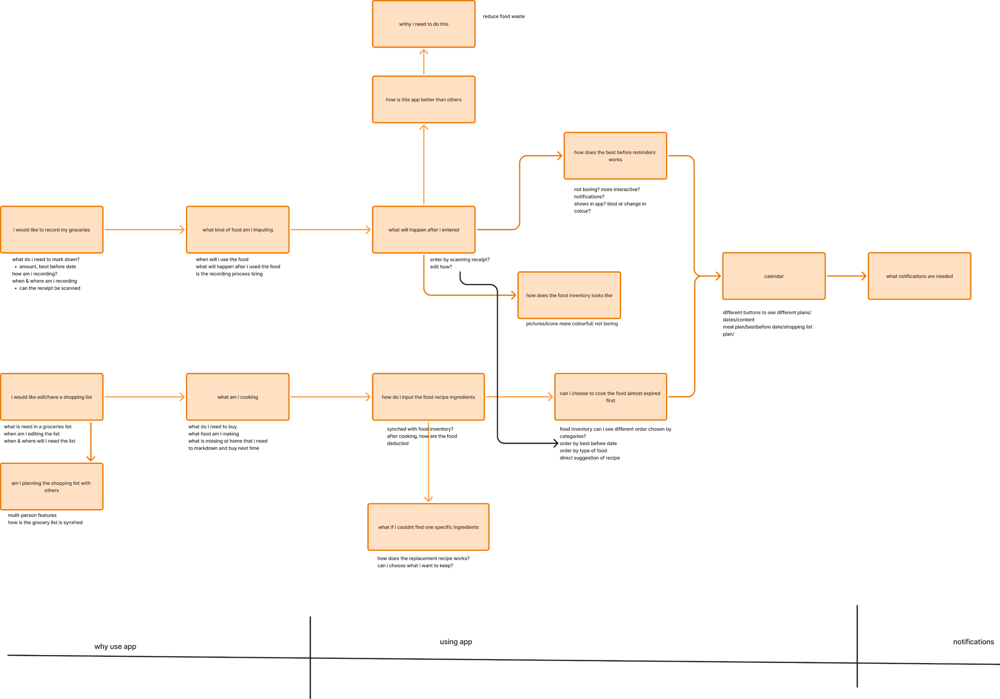

The problem
Households throw away food because of over-buying, poor planning and not knowing how to use what they have, and they feel guilty about it. In our research, 5 of 7 people only vaguely remembered what was in their fridge, and all of them felt bad when they had to throw food away.
The challenge: help people organize food and plan meals without adding more mental load.

Notice how persona buys potatoes he already has, forgets them, and weeks later throws them out feeling guilty. This pattern matched what we heard in interviews.
What I did
- Researched how people track food and how they feel about waste, then helped turn the findings into personas and journey maps.
- Designed the calendar, my main focus: month, week and day views, colour-coded events and suggestions.
- Built the prototype screen flows in Figma that connect inventory, shopping list, recipes and calendar.
- Tested the prototype with users and revised the design from their feedback.
Key decisions
Making basic tasks faster
In early testing, people took too long to finish basic tasks like adding food. We removed unnecessary steps, improved button hierarchy and made the key paths clearer. In the next round, all testers understood the basic tasks.

Early grey-box wireframes, before we removed the extra steps.
Fixing calendar navigation
Testers couldn't tell where to switch between week and month views. I moved the switch next to the search bar and made it clearer, and in the next round testers found it faster. I also removed an extra calendar screen that critique showed was confusing and duplicated.

Flow built shows how the app should connect the different features.
The final design
Four connected features: Inventory, Shopping List, Recipes and Calendar. Receipts can be scanned or items added by hand, with reminders when food is close to its best-before date. Recipes are suggested from what you already have, and families can share synced shopping lists. Items marked as expired go to a compost bin, so people can see what was wasted.

Click through the prototype to add food, plan a meal in the calendar and send missing ingredients to the shopping list.
What I learned
This project strengthened my understanding of user-centred design and usability testing. I learned to identify usability issues, translate user feedback into design improvements, and simplify user flows to improve task completion.